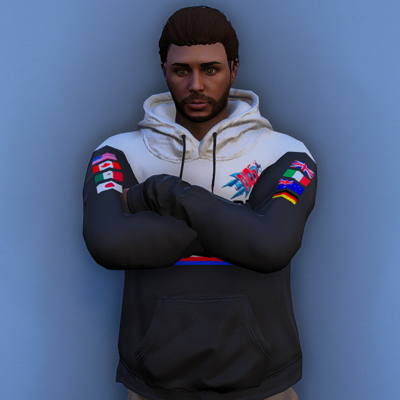
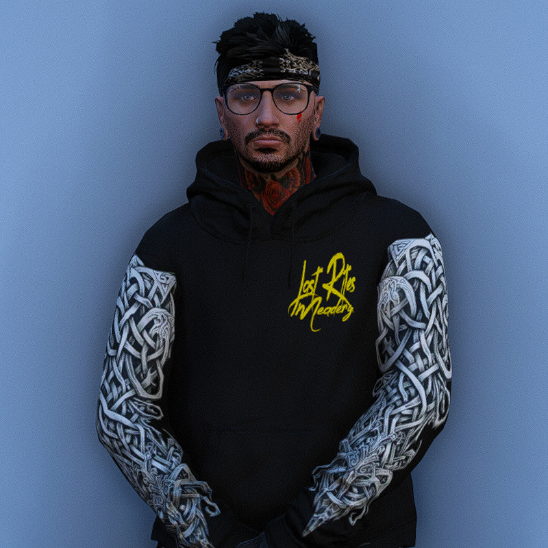
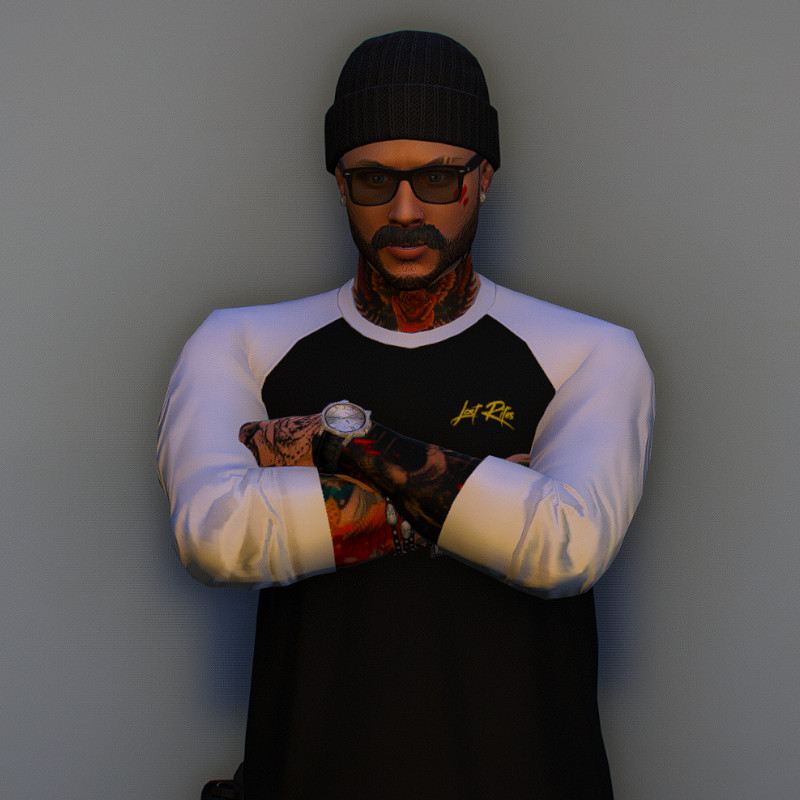

A brand new team in its debut season, looking to make a name for itself and have a good time doing it.
S95 Cup Team

A brand new team in its debut season, looking to make a name for itself and have a good time doing it.

Drivers:
Remington Steele
Danny Murphy
[Most likely to become one with a wall]

Sponsors:
Wicked Motors
The Pit Tattoo Studio
Last Rites Meadery
Founded by Danny Murphy, the owner of Last Rites Meadery, a business dedicated to helping people through the grief of losing a loved one. Comradery is one of the best ways to get through it, and through that comradery Last Rites Motorsports was founded. A team with a competitive spirit, but really, they are just in it for the love of the game.